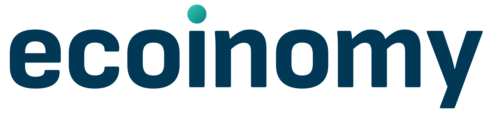
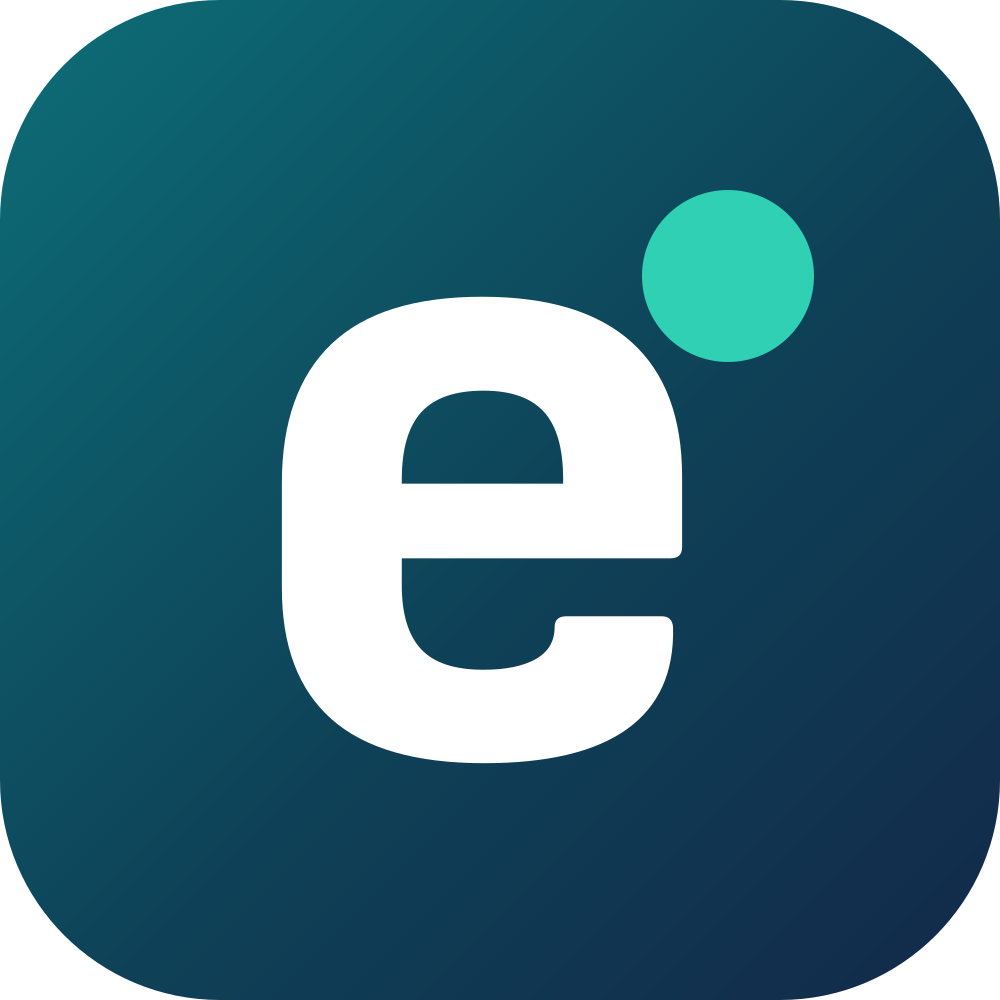
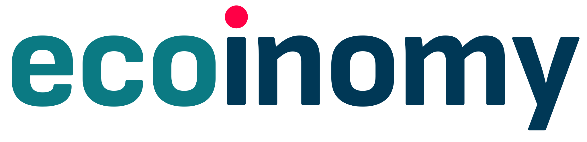
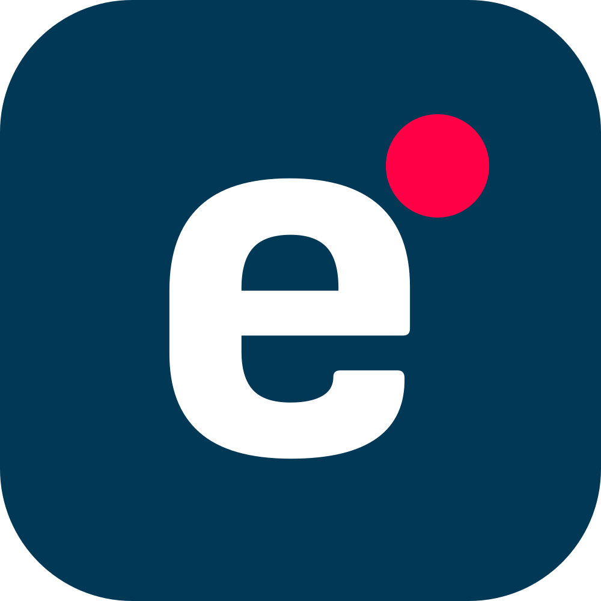
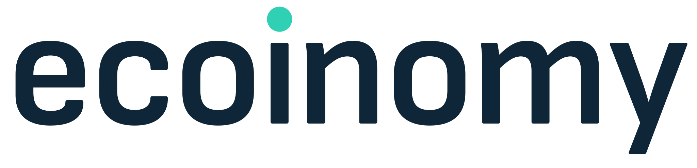
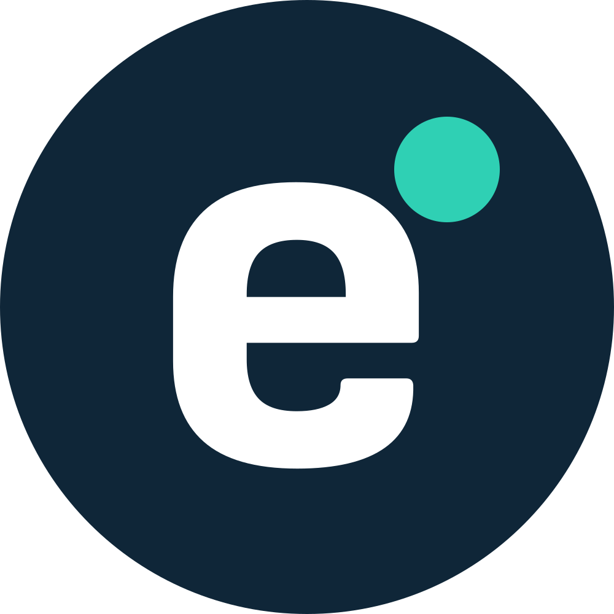

Ecoinomy logo: 3 directions
Vector logos drawn from the site font. Each shows the header, the dark footer and the favicon at 64, 32 and 16px.
Today
Current logo and favicon (the favicon is the AI editorial avatar, unreadable at 16px).
(no white version)
 ecoinomy.eu
ecoinomy.euA. Refresh
Same lowercase name, redrawn in the site font (Sofia Sans). Navy letters, the dot becomes a teal-to-mint gradient that matches the new site.
Header

Compare · Guides · MiCA

ecoinomy.eu
B. Two-tone, red dot kept
Closest to today: keeps the recognisable red dot. "eco" in teal, "inomy" in navy, so the name reads as eco + nomy.
Header

Compare · Guides · MiCA

ecoinomy.eu
C. Light and modern
Lighter weight, calmer and more premium. Mint dot. Best if we want Ecoinomy to feel like a fintech product.
Header

Compare · Guides · MiCA

ecoinomy.eu